한컴구름의 특징을 보여주는 설명서 입니다.
시작하기
다음 중 하나를 사용하여 스크린샷을 실행할 수 있습니다. 1. 런처 이용하기
1.런처버튼을 선택한 다음 작업 표시줄의 검색 상자에 한컴구름 가이드을 입력하고 결과 목록에서 한컴구름 가이드을 선택합니다. 2.런처
아이콘을 선택합니다.
2. 프로그램 실행 이용하기
1. Alt + F2 단축키를 이용해서 프로그램 실행을 실행합니다. 2.실행창에 gooroom-guide를 입력하고, 오른쪽 하단의 실행 버튼을 클릭합니다.
이용하기
1. 시작하기 페이지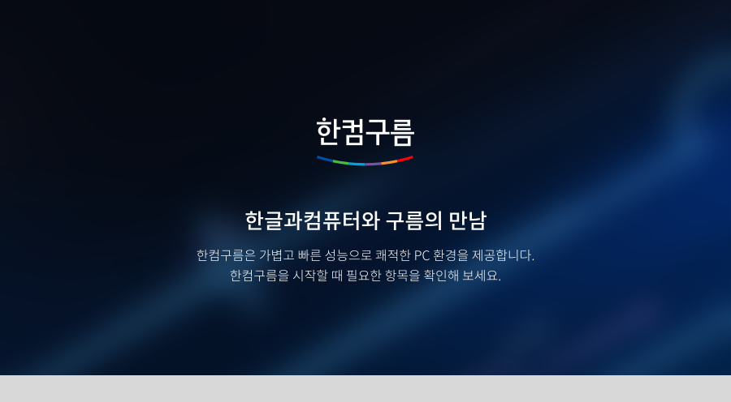
왼쪽 하단의 시작할 때 실행하기 체크박스를 클릭하면 한컴구름을 시작할 때마다 한컴구름 가이드이 자동 실행 됩니다. 오른쪽 하단의 시작하기 버튼을 클릭하여 한컴구름의 다양한 특성들을 확인 할 수 있습니다.
2. 특징 살펴보기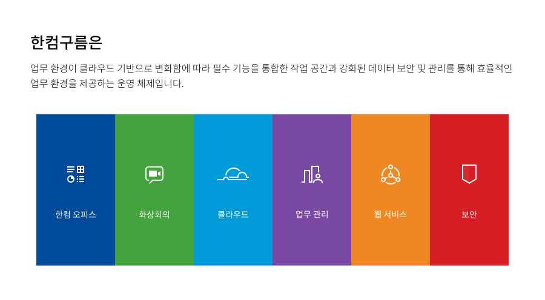
 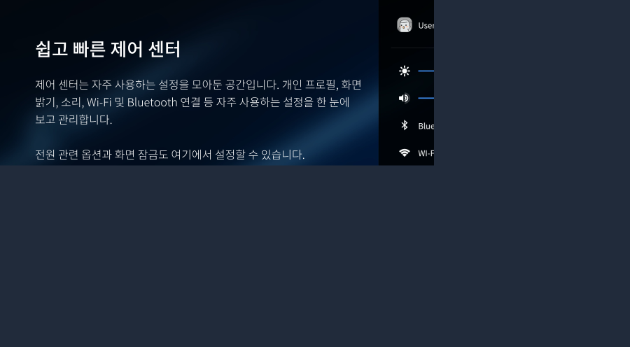
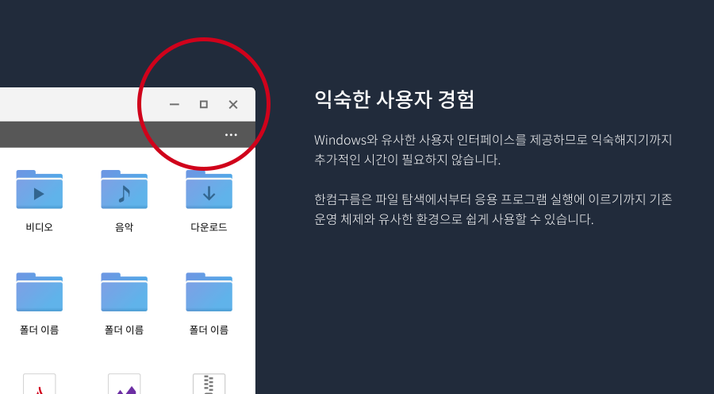
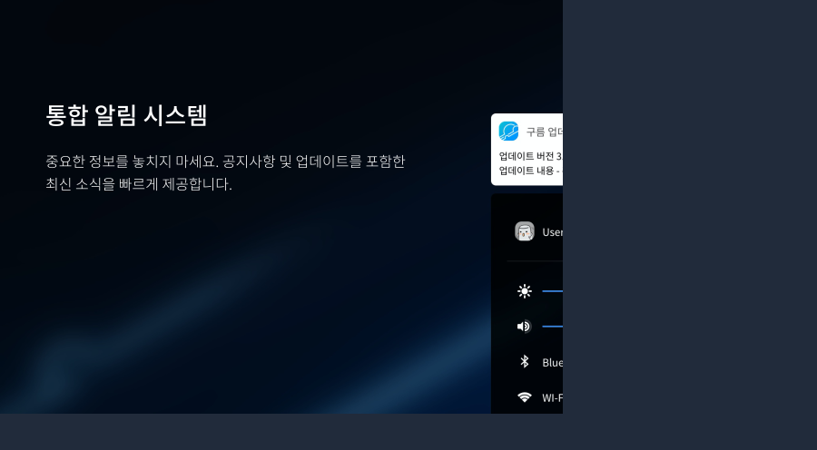
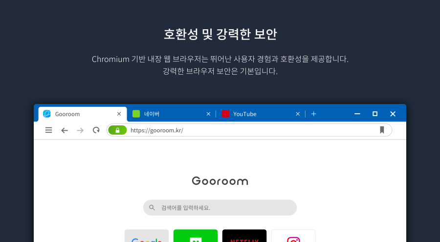
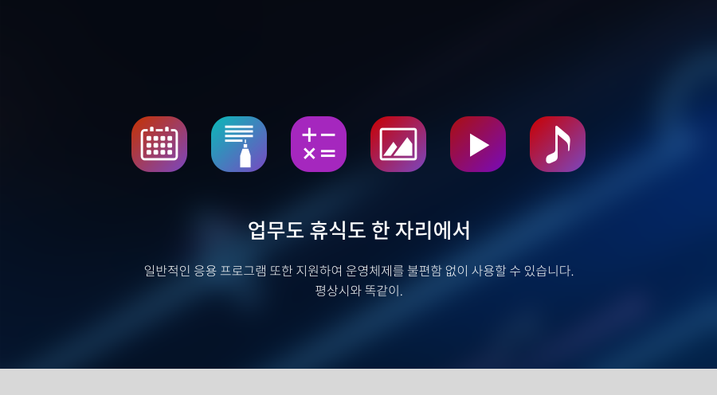
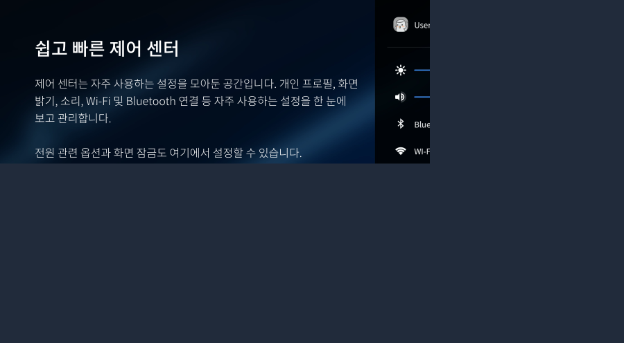
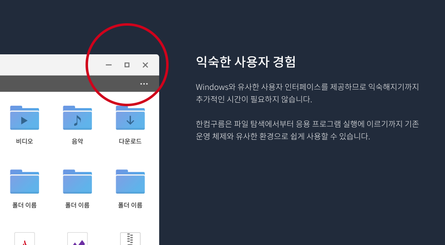
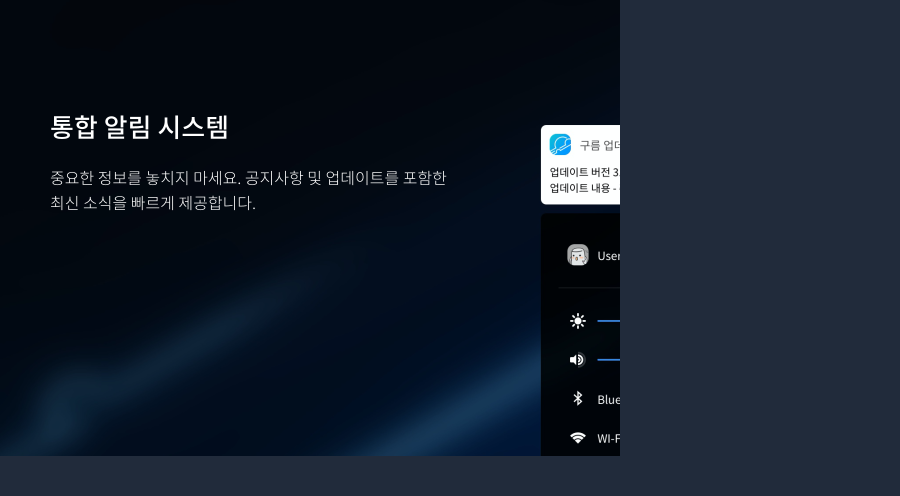
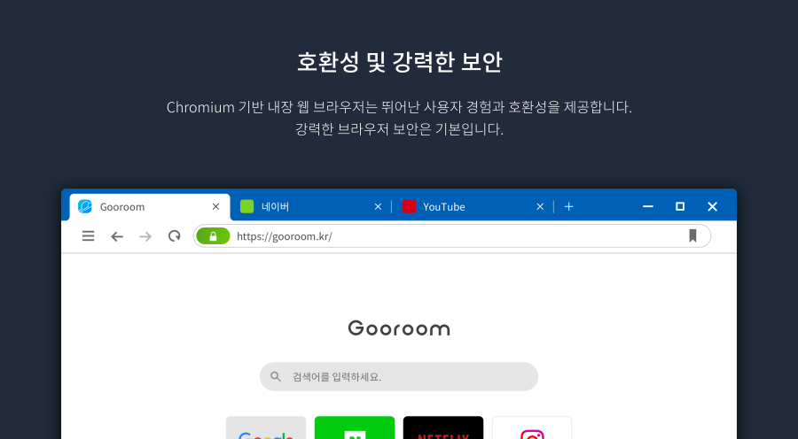
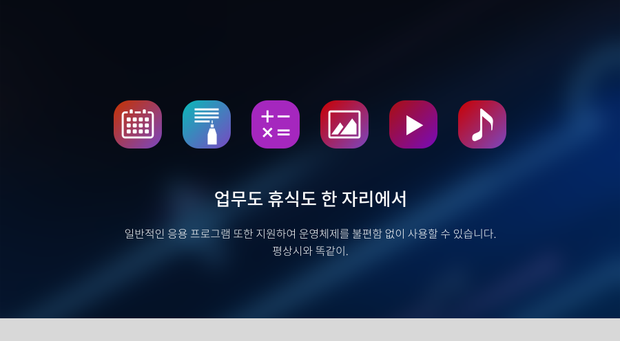

하단의 이전으로와 다음으로 버튼을 이용해 한컴구름의 특징들을 만나보실 수 있습니다.
3. 한컴구름 공식 웹사이트 둘러보기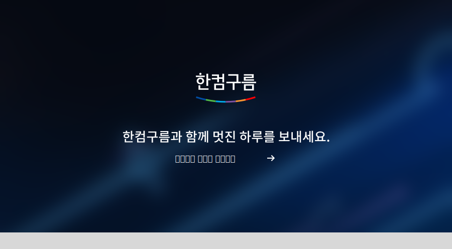
마지막 페이지에서 화면을 클릭하시면 한컴구름 공식 웹사이트로 연결됩니다. 한컴구름의 더 많은 기능들을 살펴보세요!